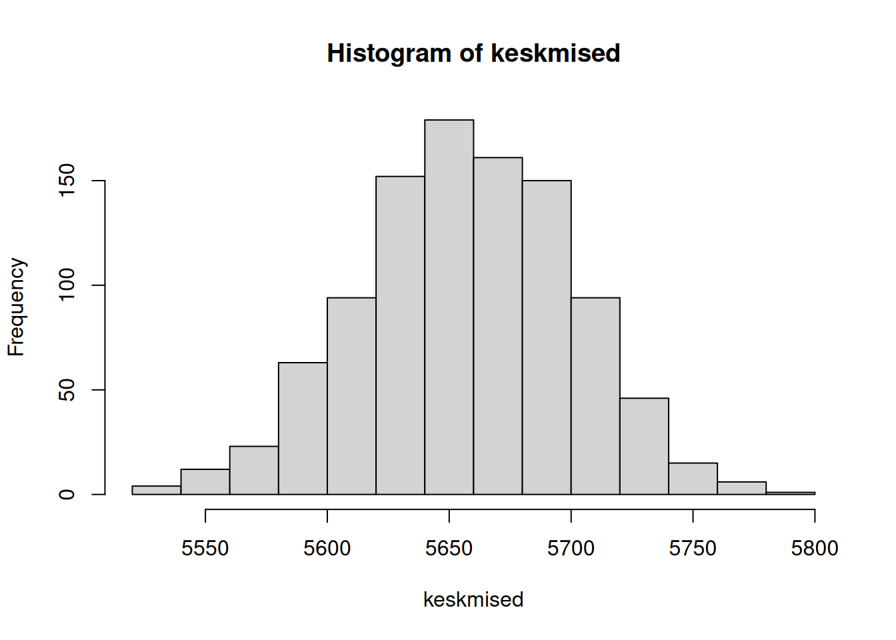

library('magrittr')
library('tidyverse')
library('ggplot2')17 Usaldusvahemikud
Tihti peame üldistusi tegema valimi alusel (Peatükk 9). Selline olukord tekib näiteks juhul, kui kasutame küsitluse teel kogutud andmeid ja soovime nende alusel teha järeldusi ka isikute kohta, kes küsitluses ei osalenud. Sellisel juhul ei iseloomusta aga valimi alusel arvutatud mõõdik otseselt kogumit, vaid on ainult hinnang. Sellist konkreetset hinnangut nimetatakse punkthinnanguks. Ei ole aga tõenäoline, et mingi konkreetne valimi alusel arvutatud mõõdiku väärtus on täpselt sama, mis vastavas kogumis. Seetõttu arvutatakse mõõdiku väärtusele ka vahemikud, milles tegelik, kogumiku väärtus teatud tõenäosusega asetseb. Selliselt arvutatud hinnangut nimetatakse vahemikhinnanguks, mis enamasti tähendab usaldusvahemikku.
Mõiste
Usaldusvahemik (confidence interval) on vahemikhinnang mingi parameetri tegeliku väärtuse kohta. See väärtus asub usaldusvahemiku piirides teatud kindlusega, millest lähtutakse usaldusvahemiku arvutamisel.
Usaldusvahemiku arvutamiseks on kaks viisi:
- eeldame, et kogumis on väärtuste jaotus samasugune nagu valimis, mistõttu saame valimist omakorda valimeid võttes ja nende alusel leitud paljude punkthinnangute alusel leida vahemikhinnangu;
- eeldame, et kogumis on väärtus mingi konkreetse teoreetilise jaotusega, mis võimaldab üksikute valimi omaduste alusel matemaatiliselt leida vahemikhinnangu.
Siin vaatame eelkõige esimest, taasvalikut hõlmavat lähenemist, aga lõpus uurime lühidalt ka teoreetilise jaotuse abil usaldusvahemiku arvutamist.
17.1 Ühe tunnuse usaldusvahemik
Alustame vajalike laienduste töölauale laadimisega.
Järgnevas näites kasutame andmestikku IT valdkonna töötajate töötasude kohta 2020. aastal peamiselt Saksamaal.
tasu <- read.csv('andmed/itsalary.csv')
str(tasu)'data.frame': 1177 obs. of 3 variables:
$ gender : chr "Male" "Male" "Male" "Male" ...
$ salary : num 80000 80000 54000 62000 76000 57000 65000 56000 95000 52500 ...
$ experience: num 5 7 4 17 5 6 5 8 15 2 ...Veerus salary on aastane brutotöötasu eurodes ilma lisatasudeta. Teisendame selle meile tuttavaks kuutöötasuks ja uurime, kuidas tasud jaotuvad.
tasu %<>% mutate(salary = salary / 12)
hist(tasu$salary)mean(tasu$salary)[1] 5656.305Näeme, et keskmine kuutöötasu on 5656 eurot. Kui tõenäoline on, et ka tegelikult oli Saksamaal 2020. aastal IT valdkonna töötajate kuutöötasu täpselt 5656 eurot? Mitte eriti. Usutavama hinnangu saaksime anda siis, kui leiame hoopis vahemiku, milles see hinnang mingi kindlusega on. Seega peaksime leidma usaldusvahemiku.
Usaldusvahemiku leidmiseks kõige intuitiivsem viis on kasutada Korduvvalikut (bootstrapping). Selleks võtame esmalt andmetest mingil hulgal juhuslikult valimeid nii, et iga leitud valim on sama suur kui algne andmestik, aga osad väärtused (isikud) valimites korduvad ja osad on puudu (Peatükk 11). Valimi võtmiseks saame kasutada funktsiooni sample() ja selle tegevuse kordamiseks funktsiooni replicate().
valimid <- replicate(1000, # Korrata järgnevat käsku 1000 korda
sample(tasu$salary, # Võtta valim töötasude seast
length(tasu$salary), # Valimis on sama palju väärtusi kui andmestik
replace = T), # Valimis võivad vaatlused korduda
simplify = FALSE) # Väljasta tulemus loeteluna
str(head(valimid))List of 6
$ : num [1:1177] 5000 7750 4500 5833 4583 ...
$ : num [1:1177] 6250 5000 3125 4400 4667 ...
$ : num [1:1177] 3125 7708 5833 5917 4833 ...
$ : num [1:1177] 5667 6000 4417 5833 7833 ...
$ : num [1:1177] 6500 5667 4000 6833 4500 ...
$ : num [1:1177] 7083 4833 6417 3833 6333 ...Üleval on kuvatud esimesed kuus valimit tuhandest. Näeme, et igas valimis on 1177 juhuslikku väärtust andmetes olevates töötasudest.
Järgmiseks arvutame iga valimi keskmise väärtuse. Selleks rakendame funktsiooni mean() igal valimil eraldi. Loetelu igale osisele saame funktsiooni rakendada funktsiooniga sapply() alljärgnevalt. Vaatame valimite keskmiste jaotust histogrammilt.
keskmised <- sapply(valimid, mean)
hist(keskmised)
Histogrammilt näeme, et suur osa valimite keskmistest jäävad väärtuste 5600 ja 5700 vahele.
Kuna usaldusvahemik oleneb sellest, kui kindlad me tahame olla, et tegelik väärtus seal asub, siis peame selle kindluse määrama. Enamasti leitakse usaldusvahemik kindlusega 95%. Taasvalikut rakendades tähendab see, et usaldusvahemiku määravad need piirid, juhul jääb 95% kõikidest leitud valimite keskmistest. Seega alumine töötasu piir peab olema selline, millest väiksemaid väärtusi on 2,5% ja ülemisest piirist suuremaid väärtusi 2,5%. Sinna vahele jääb 95% kõikide valimite alusel leitud keskmistest töötasudest. Vastavate kvantiilide leidmiseks saame kasutada funktsiooni quantile().
quantile(keskmised, .025) # Alumine 2.5% piir 2.5%
5570.367 quantile(keskmised, .975) # Ülemine 2.5% piir 97.5%
5735.849 Need kaks töötasu väärtust 5570 ja 5736 ongi 95% usaldusvahemik, mille vahele jääb suure tõenäosusega tegelik töötasu.
All oleval joonisel on leitud usaldusvahemik kujutatud töötasu valimijaotuse tihedusfunktsioonil. Joontena esitatud usaldusvahemiku vahele jääb 95% tihendusfunktsiooni kõvera alusest pindalast.
plot(density(keskmised))
abline(v = quantile(keskmised, .025))
abline(v = quantile(keskmised, .975))Eelnevate arvutuste üks mõte oli usaldusvahemiku leidmise selgitamine. Tegelikult saab korduvvaliku alusel usaldusvahemikku leida ka lühemalt, kasutades funktsioone boot() ja boot.ci() vastavast laiendusest. Sellisel juhul tuleb kasutatav mõõdik vormistada veidi keerulisemalt, käsitsi loodava funktsioonina.
library('boot')
# Leiame 1000 korduvvaliku teel saadud valimi keskmised
keskmisedBoot <- boot(tasu$salary,
function(x,i) mean(x[i]), # Funktsioon keskmiste arvutamiseks
1000) # Kordame valikut 1000 korda
# Leiame, mis vahemikku jääb 95% nendest keskmistest
boot.ci(keskmisedBoot, conf = 0.95, type = 'norm')BOOTSTRAP CONFIDENCE INTERVAL CALCULATIONS
Based on 1000 bootstrap replicates
CALL :
boot.ci(boot.out = keskmisedBoot, conf = 0.95, type = "norm")
Intervals :
Level Normal
95% (5572, 5742 )
Calculations and Intervals on Original ScaleNäeme, et leitud töötasu usaldusvahemik on sarnane varem käsitsi leitud usaldusvahemikule 5570 ja 5736.
Pea meeles!
Korduvvaliku käigus võetakse valimid juhuslikult. Seetõttu saame korduvvalikut korrates peaaegu alati veidi erineva valimi ja seega ka erineva usaldusvahemiku. See erinevus on aga piisavalt väike, et hinnngut mitte märkimisväärselt muuta.
17.2 Kahe rühma võrdlemine
Võrdleme naiste ja meeste töötasude erinevust.
hist(tasu$salary, freq = FALSE)
lines(density(tasu$salary[tasu$gender == "Female"]), col = 'red')
lines(density(tasu$salary[tasu$gender == "Male"]), col = 'blue')mean(tasu$salary[tasu$gender == "Female"])[1] 4902.418mean(tasu$salary[tasu$gender == "Male"])[1] 5799.612Näeme, et naiste keskmine töötasu on tunduvalt madalam kui meestel, kuigi töötasude jaotused suurel määral kattuvad. Enne järelduste tegemist tuleb aga meeles pidada, et andmestikus on ainult valim ja tegelikult, kogumis ei pruugi üldse erinevust olla. Usutavama järeldus saame teha usaldusvahemiku alusel. Leiame järgnevalt usaldusvahemiku naiste ja meeste töötasude kohta eraldi.
# Naiste töötasu usaldusvahemik
keskmisedN <- boot(tasu$salary[tasu$gender == "Female"],
function(x,i) mean(x[i]),
1000)
boot.ci(keskmisedN, conf = 0.95, type = 'norm')BOOTSTRAP CONFIDENCE INTERVAL CALCULATIONS
Based on 1000 bootstrap replicates
CALL :
boot.ci(boot.out = keskmisedN, conf = 0.95, type = "norm")
Intervals :
Level Normal
95% (4730, 5068 )
Calculations and Intervals on Original Scale# Meeste töötasu usaldusvahemik
keskmisedM <- boot(tasu$salary[tasu$gender == "Male"],
function(x,i) mean(x[i]),
1000)
boot.ci(keskmisedM, conf = 0.95, type = 'norm')BOOTSTRAP CONFIDENCE INTERVAL CALCULATIONS
Based on 1000 bootstrap replicates
CALL :
boot.ci(boot.out = keskmisedM, conf = 0.95, type = "norm")
Intervals :
Level Normal
95% (5711, 5887 )
Calculations and Intervals on Original ScaleNäeme, et 95% valimite korral on naiste tegelik keskmine töötasu 4730 ja 5068 euro vahel, meestel aga 5711 ja 5887 euro vahel.
Saame selle erinevuse joonistada ka valimijaotuste tihendusfunktsioonina koos varem leitud üldise keskmise töötasu valimijaotusega.
hist(keskmised, freq = FALSE, xlim = c(4500,6500))
lines(density(keskmisedN$t), col = 'red') # Naiste tõõtasu punasega
lines(density(keskmisedM$t), col = 'blue') # Meeste tõõtasu sinisegaNäeme, et naiste ja meeste tööusaldusude valimijaotused peaaegu ei kattu. Võime järeldada, et naiste töötasu IT valdkonnas 2020. aastal oli madalam mitte ainult meie andmetes, vaid ka tegelikult.
Pea meeles!
Usaldusvahemikul on palju tõlgendusviise. Õige on öelda, et usaldusvahemik kehtib 95% valimite korral ja tegemist on 95% usaldusvahemikuga. Korduvvaliku alusel leitud usaldusvahemiku korral ei ole aga ka täiesti vale öelda, et need kehtivad 95% tõenäosusega või et teglik väärtus jääb usaldusvahemikku 95% tõenäosusega.
17.3 Seose usaldusvahemik
Korduvvalik ei võimalda usaldusvahemikku leida mitte ainult keskväärtuse, vaid mistahes parameetri jaoks. Alloleval joonisel paistab, et töökogemuse (experience) kasvades suureneb ka keskmiselt töötasu (salary). Meid võib huvitada, kas see seos kehtib ainult meie valimis või ka tegelikkuses.
ggplot(tasu) +
aes(x = experience, y = salary) +
geom_point() +
geom_smooth() +
theme_minimal()`geom_smooth()` using method = 'gam' and formula 'y ~ s(x, bs = "cs")'Seost kahe tunnuse vahel saame hinnata korrelatsioonikordajaga. Leiame järgneval korrelatsiooni kahe huvipakkuva tunnuse vahel selliselt, et võtame arvesse ainult isikuid, kelle kohta ei ole kummagi tunnuse väärtuste seas puuduvaid. Selleks lisame funktsiooni cor() argumendi use = 'pairwise.complete.obs'.
cor(tasu$salary, tasu$experience, use = 'pairwise.complete.obs')[1] 0.4266482Näeme, et meie valimis on tunnuste vahel keskmise või mõõduka tugevusega positiive seos.
Arvutame usaldusvahemiku jällegi laienduse boot funktsioone kasutades.
korrelatsioonid <- boot(tasu,
function(x,i) cor(x[i, 'salary'], x[i, 'experience']),
1000)
boot.ci(korrelatsioonid, type = 'norm')BOOTSTRAP CONFIDENCE INTERVAL CALCULATIONS
Based on 1000 bootstrap replicates
CALL :
boot.ci(boot.out = korrelatsioonid, type = "norm")
Intervals :
Level Normal
95% ( 0.3711, 0.4800 )
Calculations and Intervals on Original ScaleNagu näha, siis 95% valimite korral jäävad korrelatsioonid vahemikku 0.37 ja 0.48.
Joonistame ka korrelatsioonide valimijaotuse.
hist(korrelatsioonid$t, xlim = c(0,.5))On selge, et 95% usaldusvahemik ei kata nullpunkti. Sellest võime järeldada, et mitte ainult meie valimis, vaid ka üldiselt, kogumis on kogemuse ja töötasu vahel positiivne seos. Usaldusvahemiku alusel võime järeldada, et korrelatsioonikordaja kogemuse ja töötasu vahel on kogumis 95% kindlusega vähemalt 0.37, aga mitte üle 0.48.
17.4 Usaldusvahemik statistika lähenemises
Eelnev usaldusvahemiku leidmise viis valimeid simuleerides iseloomustab hästi andmeteadust. Enne arvuteid kujunenud statistika lähenemine usalduvahemike leidmisele põhineb rohkem matekaatika teoorial.
Paljusid nähtusi iseloomustavad väärtused järgivad jaotuses sageli normaaljaotust, aga ka sellele sarnast t-jaotust. Võime oletada, et ka kogumis on väärtused jaotunud vastavalt t-jaotusele.
tjaotus <- rt(1e4, length(tasu$salary)) * sd(tasu$salary) + mean(tasu$salary)
par(mfrow = 1:2)
hist(tasu$salary, main = "Jaotus valimis", 20)
hist(tjaotus, main = "Eeldatav jaotus kogumis", 20)Näeme, et meie küsitletute seas on jaotus veidi paremale kaldu, aga üldiselt siiski sarnane sellele vastavale t-jaotusele. Kui eeldame, et kogumis ongi väärtused jaotunud nii nagu t-jaotuse korral, siis saame usaldusvahemiku leida teoreetiliselt ilma suurel hulgal valimeid tekitamata.
Nimetatud eeldusel saab usaldusvahemiku leida matemaatiliselt kasutades valemit
\[\bar{x} \pm z \frac{s}{\sqrt{n}}, \]
kus \(\bar{x}\) on keskmine, \(z\) on t-jaotuse täiendkvantiil, \(s\) valimi standardviga ja \(n\) valimi suurus.
Kirjutame selle valemi R käskudena.
z <- qt(0.975, length(tasu$salary) - 1) # T-jaotuse täiendkvantiil
viga <- z * (sd(tasu$salary) / sqrt(length(tasu$salary))) # Viga keskmisest
mean(tasu$salary) - viga # Alumine 2.5% piir[1] 5573.566mean(tasu$salary) + viga # Ülemine 2.5% piir[1] 5739.044Näeme, et töötasu 95% usaldusvahemik on 5574 ja 5739 euro vahel. Sama tulemuse saame ka lihtsamalt, kasutades ära funktsiooni t.test().
t.test(tasu$salary)
One Sample t-test
data: tasu$salary
t = 134.13, df = 1176, p-value < 2.2e-16
alternative hypothesis: true mean is not equal to 0
95 percent confidence interval:
5573.566 5739.044
sample estimates:
mean of x
5656.305 Need matemaatiliselt leitud usaldusvahemik on väga sarnane varem korduvvaliku teel leitud usaldusvahemikule, mis oli 5570 ja 5736.